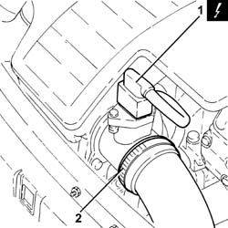
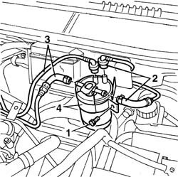
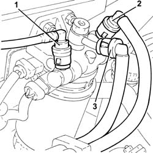
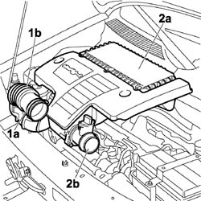
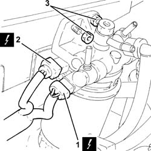
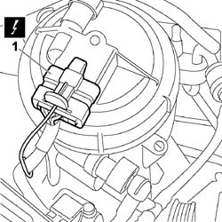
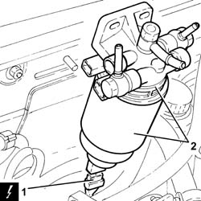
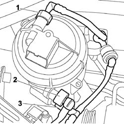
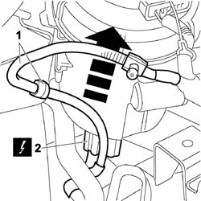

1044B10 fuel filter assembly - r + r or replace
- Path
- Procedures > 10 ENGINE > 1044 FUEL CIRCUIT PUMP/AND DEVICES > 1044B fuel filters > 1044B10 fuel filter assembly - r + r or replace
- Kind
- repair procedure (removal / refitting; the operation number is the code)
- Applies to
- all engines; all production periods
- Interactive page
- https://sloeber94.github.io/elrnDB-fDbl/en/#/2584398
Applies to: all engines; all production periods
 Removing
Removing
 Refitting
RefittingEnsure that the ignition key is in OFF position, then disconnect the battery negative terminal (-).
 | Name | Connector |
|---|---|---|
- | Battery | A1 |
Undo the fuel filler cap and remove it to discharge the pressure in the system.
1. Disconnect the electrical connection from the air flow meter.
| Name | Connector |
|---|---|---|
1 | Air flow meter | K41 |
2. Loosen the band and disconnect the the turbocharger air inlet sleeve from the rigid pipe, air flow meter side.

Applies to: all engines; all production periods
Removing
Refitting1. Undo the filter mounting bracket retaining bolt.
2. Disconnect the supply and return pipes to the tank from the fuel filter and from the quick release attacments.
3. Disconnect the supply and return pipes to the injection pump from the filter.
4. Remove the fuel filter from the engine.

Applies to: all engines; all production periods
Removing
RefittingEnsure that the ignition key is in the stop OFF, then disconnect the battery negative terminal.
| Name | Connector |
|---|---|---|
- | Battery | A1B |
1. Disconnect the rapid connector of the front fuel supply pipe from the fuel filter.
2. Disconnect from the fuel filter the rapid connector of the supply pipe to the pressure pump.
3. Disconnect from the fuel filter the rapid connector of the supply pipe to the fuel return manifold pipe.

Applies to: all engines; all production periods
1. Loosen the band (1a) and disconnect the flexible hose (1b) from the air intake.
2. Remove the air filter (2a) complete with air flow meter (2b) by releasing from the underlying pins and then from the rear fastening.

Applies to: all engines; all production periods
Refitting
RemovingFit the fuel filter in its seat.
Connect the fuel lines to the fittings on the filter.
Tighhten the mounting bracket retaining bolts.
 | Fastening | Component | Ø | Value (daNm) |
|---|---|---|---|---|
- | Bolt | FUEL FILTER | M6 | 0.85 |
Applies to: all engines; all production periods
1. Disconnect the electrical connection from the thermal switch for the fuel heater.
| Name | Connector |
|---|---|---|
1 | Diesel preheating resistor |
2. Disconnect the electrical connection from the fuel pre-heating device.
| Name | Connector |
|---|---|---|
2 | Diesel preheating resistor |
3. Undo the nuts fixing the fuel filter to the engine compartment bulkhead.

Applies to: all engines; all production periods
1. Disconnect the electrical connection from the fuel pre-heating device.
| Name | Connector |
|---|---|---|
1 | Fuel temperature sensor | K81 |

Applies to: all engines; all production periods
1. Lift the fuel filter as much as necessary to disconnect the electrical connector from the fuel filter water presence sensor.
| Name | Connector |
|---|---|---|
1 | Water in diesel filter sensor | K31 |
2. Remove the complete fuel filter.

Applies to: all engines; all production periods
1. Disconnect the quick-release connector for the fuel inlet pipe, fuel filter side, and plug the ends.
2. Disconnect the rapid connector for the fuel supply pipe from the fuel filter to the pressure pump, fuel filter side, and plug the ends.
3. Disconnect the rapid connector for the fuel return pipe, fuel filter side, and plug the ends.

Applies to: all engines; all production periods
Refitting
RemovingConnect the electrical connection to the water-in-fuel filter presence sensor.
Refit the complete fuel filter in its seating and secure it with its nuts to the engine bulkhead.
Connect the electrical connection to the fuel pre-heating device.
Connect the electrical connection to the thermal switch for the fuel heater.
Connect to the fuel filter the rapid connector of the supply pipe to the fuel return manifold pipe.
Connect to the fuel filter the rapid connector of the supply pipe to the pressure pump.
Connect to the fuel filter the rapid connector of the front fuel supply pipe.
Connect the battery terminal (-).
Applies to: all engines; all production periods
1. Remove the cable clip.
2. Raise the fuel filter sufficiently to disconnect the electrical connection from the water presence sensor in the fuel filter.
| Name | Connector |
|---|---|---|
2 | Water in diesel filter sensor | K31 |
3. Remove the complete fuel filter from the anchoring bracket, withdrawing it upwards.

Applies to: all engines; all production periods
Refitting
RemovingConnect the electrical connection to the water-in-fuel filter presence sensor.
| Name | Connector |
|---|---|---|
- | Water in diesel filter sensor | K31 |
Fit the complete fuel filter in its seating.
Place the collar securing the fuel filter in its housing and fasten it using the nuts.
Remove the protective plugs and connect the rapid connector for the fuel return pipe, fuel filter side.
Remove the protective plugs and connect the rapid connector for the fuel supply pipe from the filter to the pressure pump, fuel filter side.
Remove the protective plugs and connect the quick-release connector for the fuel inlet pipe, fuel filter side.
Connect the electrical connection to the fuel pre-heating device.
| Name | Connector |
|---|---|---|
- | Fuel temperature sensor | K81 |
Place the fuel filler pipe cap in its housing.
Position the air filter complete with air flow meter in its seating, engaging it in the rear attachment and then in the underlying pins.
Connect the flexible hose to the air intake on the crossmember and tighten the fixing band.
Connect the air intake sleeve to the turbocharger, air flow meter side, and tighten the band.
Connect the electrical connection to the air flow meter.
| Name | Connector |
|---|---|---|
- | Air flow meter | K41 |
Connect the battery negative terminal.
| Name | Connector |
|---|---|---|
- | Battery | A1 |
Topics that link to this page (42)
- B10 ENGINE DOES NOT START / UNDER NO CIRCUMSTANCES
- B13 ENGINE STARTS WITH DIFFICULTY'
- B20 ENGINE STARTS, AND CUTS OUT STRAIGHT AWAY
- D05 ENGINE DOES NOT PRODUCE BEST PERFORMANCE
- X01 EXCESSIVE FUEL CONSUMPTION
- 0010K40 40,000km service coupon, emission control versions
- 0010K80 80,000km service coupon - emission control versions
- 0010M20 120,000km service coupon, emission control versions
- 0010M60 160,000km service coupon - emission control versions
- 1004B10 POWER UNIT WITH MANUAL GEARBOX - R.R
- 1008a46 TIMING SIDE POWER UNIT RIGID SUPPORT - R.R.
- 1008b10 power unit front mount (timing side) flexible block - replace
- 1016C10 cylinder head - r + r and replace gasket
- 1020A20 crank case oil sump - r + r clean seals for sealant application
- 1020D26 flywheel side oil seal cover - r+r
- 1024B10 engine flywheel - r + r for versions with manual gearbox
- 1040B32 front fuel delivery line - r r
- 1040B54 fuel line from manifolds - r r
- 1044B20 fuel filter filtering element - replace
- 1060E10 pressure pump - r r
- 1060E40 supplementary pressure pump - r r
- 1060F10 fuel injectors
- 1060F30 fuel delivery manifold - r r
- 1060F34 lines to injectors - r r
- 1060F36 lines to injectors - r r
- 1060G16 pressure relief sensor - r r
- 1060G50 Electro-pneumatically controlled THROTTLE CASING - R.R.
- 1060G70 vacum tank for controlling engine air intake r r
- 1060G90 diesel injection wiring harness - r r
- 1072B50 sleeves connecting air capacity box to inlet manifold is - r+r
- 1080C24 e.g.r. system solenoid - r + r
- 1080C28 rigid pipe from egr solenoid to throttle body r r
- 1080C80 exhaust gas water heat exchanger for egr valve r r
- 1084B26 emgine oil intake duct - r r
- 1088C30 thermostat unit - r+r
- 1088D57 Engine coolant RETURN PIPE to SUPPLY RESERVOIR - R.R.
- 1088D97 Coolant PIPE between EXHAUST GAS/WATER HEAT EXCHANGER and thermost unit - R.R.
- 1810A20 clutch - r + r
- 2110A10 manual gearbox and differential - r + r
- 4130B20 power steering pump r r
- 4130B40 outlet pipe from pump to power steering case r r
- 5520C10 glow plugs - r+r